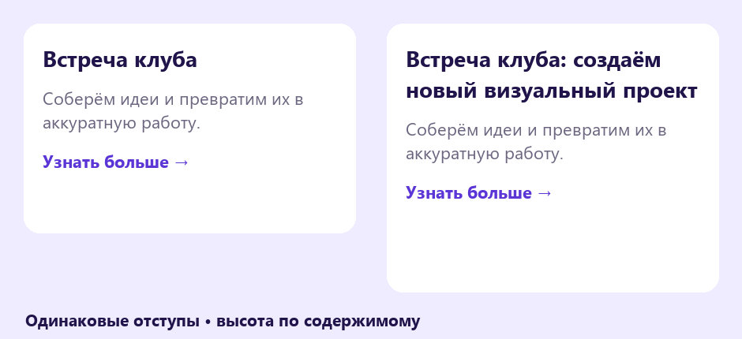
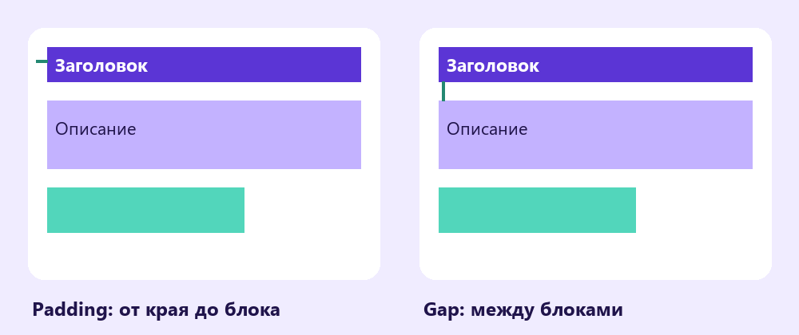
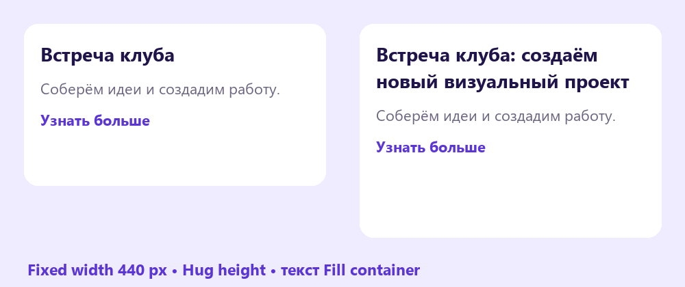

Auto layout
Собери карточку клуба, которая сохраняет отступы, когда меняется текст. Проверь её на коротком и длинном названии.
Перейти к заданию ↗
Перед новой практикой
Три небольших вопроса по предыдущему уроку. Выбери ответ и нажми «Проверить».
Клавиши для практики
Сочетания для Windows. Переключи клавиатуру на английскую раскладку. Перед командой заверши ввод текста.
Элементы в одном потоке
Auto layout (автоматическая компоновка) располагает дочерние элементы в строку или столбец. Выдели два текстовых блока и нажми Shift + A. В правой панели выбери вертикальное направление. Порядок детей в Layers задаёт их порядок в карточке.

Название и описание образуют вертикальный поток, отступы задаются у родительского фрейма.
Попробуй в Figma
Gap и Padding
Gap (промежуток) - расстояние между дочерними элементами. Padding (внутренние отступы) - расстояние от содержимого до границ контейнера. У карточки эти величины отвечают за разные вещи. Попробуй Gap 16 px и Padding 24 px со всех сторон.

Padding окружает содержимое; Gap разделяет соседние блоки.
Попробуй в Figma
Встреча клуба
Соберём идеи и превратим их в аккуратную работу.
Узнать больше →Проверь, как текст меняет высоту карточки.
Hug, Fixed и Fill
Fixed (фиксированный) сохраняет размер. Hug contents (по содержимому) подстраивает контейнер под его детей. Fill container (заполнить контейнер) растягивает ребёнка в доступном месте. Для карточки задай ширину 440 px как Fixed, высоту как Hug. У текстов задай ширину Fill container и высоту по содержимому.

При длинном названии высота карточки увеличивается, отступы остаются прежними.
Попробуй в Figma
Карточка встречи с Auto layout
Собери карточку встречи клуба «Пульс» или своего клуба. В шаблоне есть стартовые тексты и палитра, поэтому предыдущий файл открывать не нужно.
В Figma нажми на название файла и выбери Duplicate to drafts (создать копию в черновиках). Работай в собственной копии. Инструкции и образцы заблокированы.
Проверь свою работу
Отмечай пункты после проверки в Figma.
Если закончил раньше
Добавь внутри карточки горизонтальную строку из двух меток с собственным Auto layout. Проверь, как вложенный контейнер ведёт себя при изменении текста.